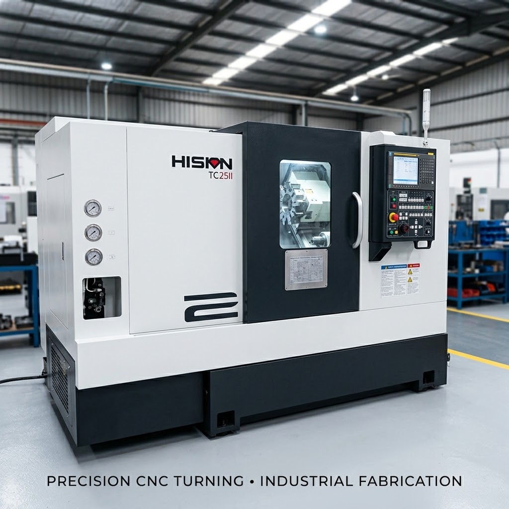
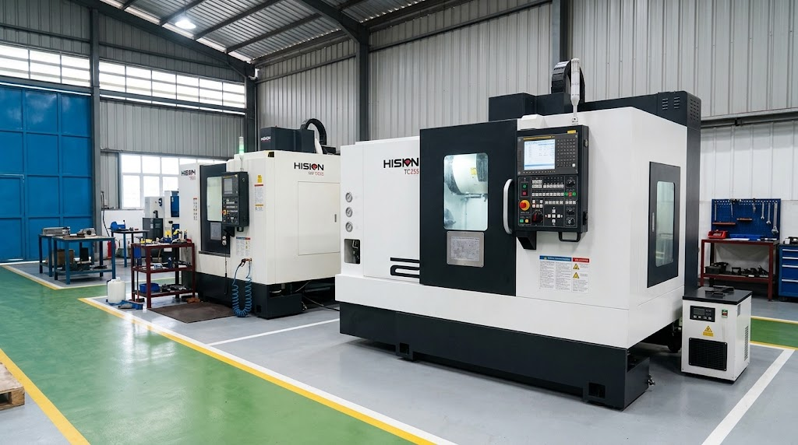
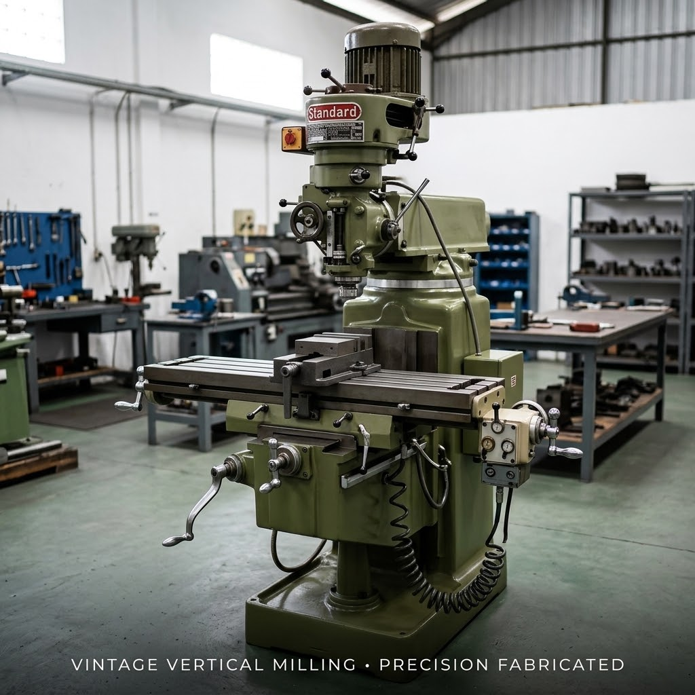
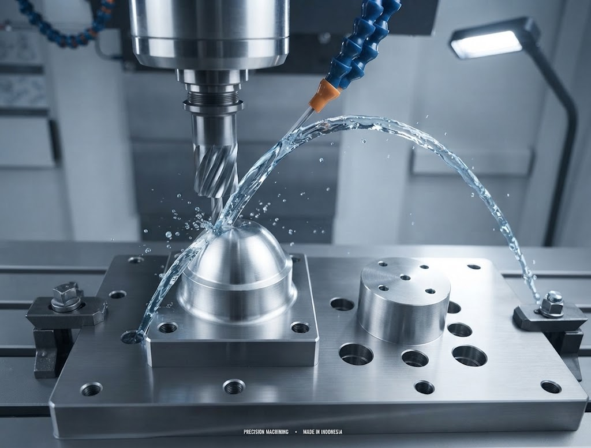
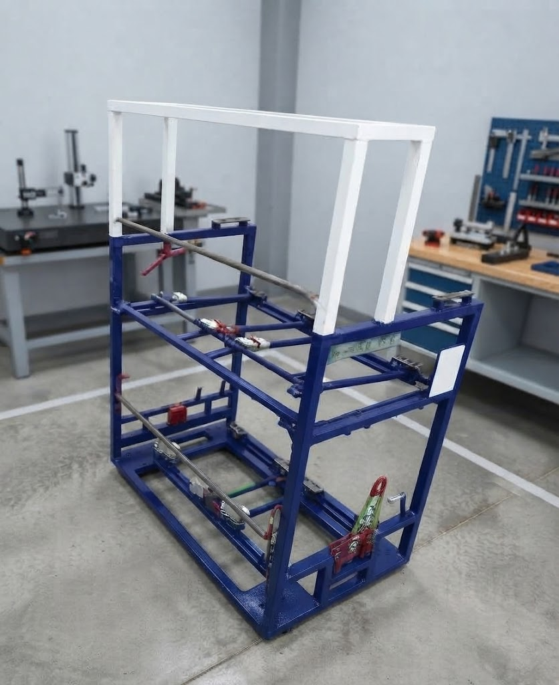
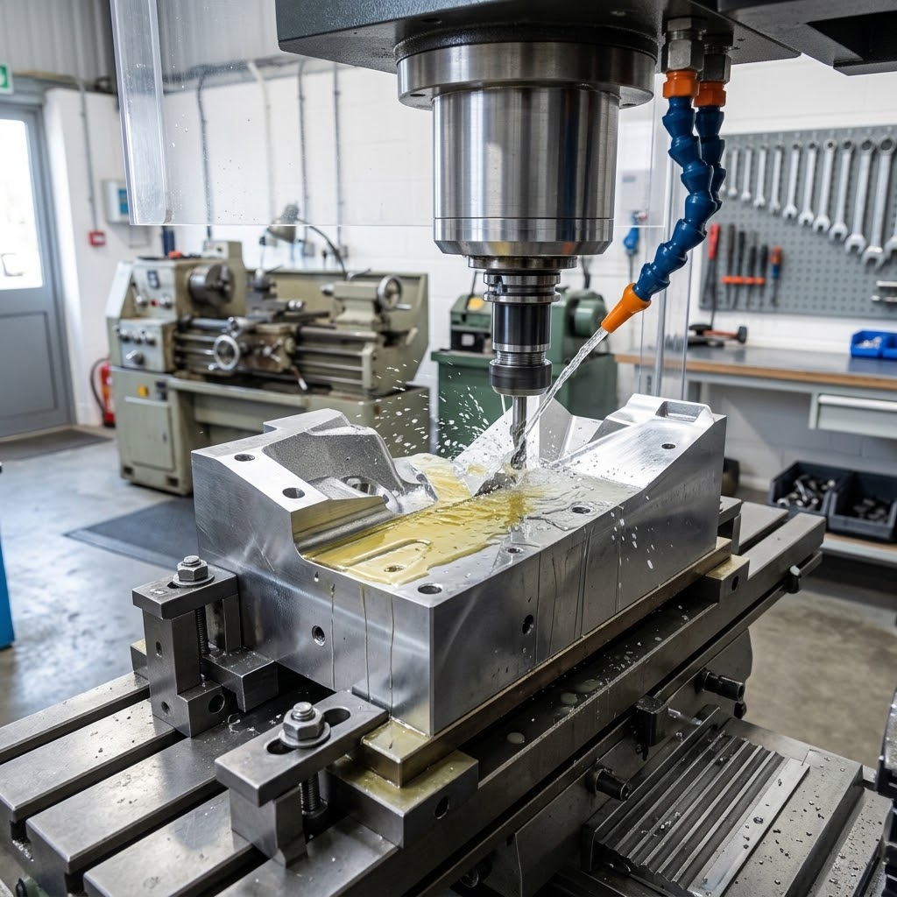

Mitra Manufaktur Presisi Machining CNC, Dies, Jig & Fabrikasi Industri
Solusi terintegrasi pembuatan komponen berakurasi tinggi, rancang bangun stamping dies, alat bantu checking fixture jig, serta fabrikasi struktur rak material handling untuk tier-1 otomotif dan industri manufaktur nasional.
Kirimkan Gambar Kerja (Drawing) 2D/3D Anda Hari Ini
Hindari kendala stop-line dan part meleset toleransi. Tim engineering PT. Nurcahya Teknik Industry siap memvalidasi kelayakan manufaktur (DFM), mengalkulasi waktu siklus pengerjaan, dan menerbitkan surat penawaran harga resmi B2B dalam waktu 1×24 jam kerja.
Mesin Permesinan Presisi Terkini
Didukung lini mesin CNC berdaya potong tinggi dan mesin konvensional untuk memastikan kecepatan dan akurasi produksi.

Fasilitas & Layanan CNC Milling 3-Axis (Hision & GUT)
Dua unit mesin CNC Milling 3-Axis berkecepatan tinggi dengan kapasitas meja kerja hingga 1.000 × 500 mm untuk pembuatan cetakan dan part presisi.

Fasilitas & Layanan CNC Bubut Turning (Hision)
Satu unit CNC Bubut Hision presisi tinggi untuk pembentukan komponen silindris, ulir bertingkat, dan kontur radial berkecepatan tinggi.

Fasilitas & Layanan Milling Manual Konvensional
Mesin milling vertikal konvensional untuk pekerjaan penyiapan material cepat, alur pasak (keyway), lubang tap, dan perbaikan part darurat.
Produk & Portofolio Manufaktur
Pilih produk untuk melihat spesifikasi teknis, jenis material, dan alur pengerjaan lengkap.

Jasa Machining Presisi Komponen Spherical & Kontur Radial
Pemesinan presisi komponen berbentuk bulat, kontur cembung-cekung radial, dan dudukan engsel presisi tinggi dengan toleransi mikron.

Jasa Machining Presisi Pelat Cetakan, Die Base & Stripper Plate
Pemesinan pelat tebal cetakan baja perkakas dengan kerataan bidang paralel (flatness) superior dan lubang dowel pin berpresisi H7.

Pemesinan Presisi Billet Logam Solid & Kontur 3D Kompleks
Pemesinan blok logam solid (billet) menjadi part berstruktur tipis dan berkontur 3 dimensi rumit tanpa deformasi tegangan sisa.
Mitra & Pelanggan Korporat
Dipercaya oleh industri otomotif perakitan dan industri manufaktur terkemuka dalam memenuhi rantai pasok manufaktur.